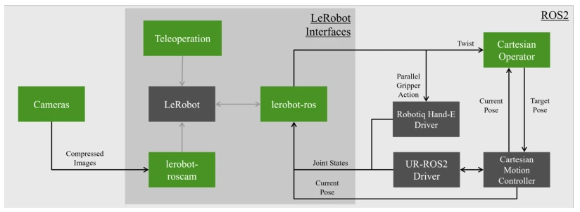
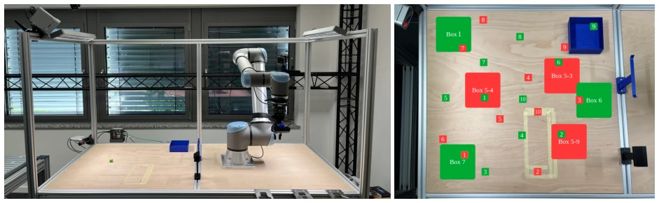

This paper attempts to fit "small" models into "large" industrial scenarios; the intention is good, given that deploying large models on the cloud carries compliance risks. ROS2SmolVLA is a decent middleware, but the experimental results are somewhat "meager". ID scenarios are passable, but OOD performance drops to 46%, which would make the industry want to punch. SmolVLA is indeed lightweight, but its generalization in the real physical world is still too "fragile", with color bias and occlusion issues fully exposed. It counts as opening a new perspective for the industry, but is far from implementation. However, the authors are very honest, directly admitting the success rate is too low, without bragging. This work proves that running small models on industrial hardware is feasible, but far from "intelligence", more like "ability to act". Although the simulation environment was not fully verified, it provides valuable experience for subsequent research.
Existing VLAs such as RT-2 [8] and OpenVLA [14] rely on the cloud or large computing power, with safety and compliance concerns at industrial sites, and high inference latency. Laboratory robots (such as SO-101) cannot represent industrial loads and spatial constraints. SmolVLA [9] is lightweight but lacks industrial validation. This paper aims to fill the gap from laboratory to industrial-grade lightweight robots, solving edge computing and real-time issues, allowing models to run locally to avoid data leakage. The industry needs adaptive production systems, but existing automation systems are static and unable to respond to changes. Additionally, existing research mostly focuses on large models, ignoring deployment constraints on edge devices, leading to compliance and privacy issues.
Proposes the ROS2SmolVLA framework, based on LeRobot and ROS 2. Architecture divides into edge inference and workstation execution, isolating environments via Docker. Data flow: Camera input is standardized via lerobot-roscam, fused with proprioceptive states, input to SmolVLA to generate TwistStamped commands. Supports Cartesian control, adapted for UR10e. Utilizes layer-skipping to balance performance and efficiency. Flow Matching Transformer is used for action generation. Uses MoveIt Servo for real-time operational space velocity tracking. The system supports interchange between virtual and real robots, verified via Gazebo simulation. SmolVLA adopts token-shuffling to reduce redundancy, interleaved attention to reduce complexity. Training uses 349 teleoperation clips, 200,000 steps, fine-tuned on RTX 4080. Data includes three views and joint states. The interface layer decouples hardware execution and multimodal reasoning, allowing cross-embodiment control. Specifically includes ros2smolvla docker container and various interface modules, ensuring software environment consistency.

Figure 1: Architecture of ROS2SmolVLA. Self-developed software (green) and external dependencies (gray) are marked as boxes. Arrows indicate communication (dark: ROS 2 topics, light: LeRobot interface).
Uses UR10e and Robotiq gripper, 349 teleoperation data points. 9 scenarios test ID/OOD. ID success rate 78% grasp, 72% place. OOD placement rate drops to 46%. Found the model has bias towards green cubes, and uses blue as a placement trigger signal. Occlusion and black object detection failed. Proves small models still lack generalization in industrial scenarios, needing more diverse data. Simulation environment not fully verified. Specific tests include color, position, shape changes, such as T1-T9. T1-T5 test position and color, T6-T7 test color instruction following, T8-T9 test OOD containers. Results show OOD placement success rate significantly decreased, mainly limited by visual token count and training data coverage.

Figure 2: Left: Hardware setup used in this paper. The main robot workspace is on the left half. The scene’s lighting is well-controlled through blinders, diffuse top lights and flicker-less side lights. As the hardware is used in multiple projects, additional tools and markings are present. These are used as interferences for the target process. Right: ID (green) and OOD (red) CP, and BP in the robot’s main workspace.